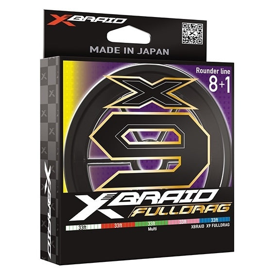

XBraid X9 Fulldrag Braid
Diameter chart, reel capacity & backing guide

X9 Fulldrag uses eight strands around a ninth core. The US Multi Color SKU range verified here supplies 8-120 lb labels, with package length changing by strength. Its depth-and-distance color system and central-core construction distinguish it from an ordinary eight-strand XBraid.
- Construction
- Eight woven strands around one core; nine-strand braid
- Listed strengths
- 8-120 lb
- Line type
- Braid main line
Is X9 Fulldrag right for your setup?
Consider Fulldrag when you want a multicolor braided mainline and a clearly identified working length. The core is a construction feature, not evidence that line can never flatten or fail. For offshore use, plan depth, current-induced line angle, fish runs, and retying reserve before choosing backing.
How much X9 Fulldrag will fit?
Calculated estimates, not measured fills. Stop at the reel manufacturer's fill level even if some line remains.
XBraid X9 Fulldrag Braid diameter chart
US Multi Color (ML) official distributor rows. Published inch/mm pairs retained. Packages verified individually; Marsh Green with missing diameters excluded.
| Strength | Inches | mm | Spools (yd) |
|---|---|---|---|
| 0.005 | 0.130 | 165, 330, 660, 3300 | |
| 0.006 | 0.150 | 165, 330, 660, 3300 | |
| 0.008 | 0.190 | 165, 330, 660, 3300 | |
| 0.009 | 0.230 | 165, 330, 660, 3300 | |
| 0.011 | 0.280 | 165, 330, 660, 3300 | |
| 0.013 | 0.320 | 165, 330, 660, 3300 | |
| 0.014 | 0.360 | 165, 330, 660, 3300 | |
| 0.016 | 0.410 | 165, 330, 660, 3300 | |
| 0.017 | 0.430 | 330, 660, 3300 | |
| 0.020 | 0.500 | 330, 660, 3300 | |
| 0.022 | 0.550 | 330, 660, 3300 |
Choosing your X9 Fulldrag strength
The official Multi Color 15 lb diameter is .008 inch / .19 mm, and 20 lb is .009 inch / .23 mm. These are the exact distributor SKU rows, not the different metric values found in a retailer chart.
The 65 lb entry retains 165-, 330-, 660-, and 3,300-yard packages. At 80 lb and above, this verified set starts at 330 yards.
The 100 and 120 lb labels are genuine entries, at .50 and .55 mm. They must not be attached to an existing lighter-strength ID just to preserve an old selector.
Specification-based guidance, not a hands-on X9 Fulldrag test. Capacity results are estimates, not measured fills.
Want a guided recommendation?
Continue in the Setup WizardSame pound test, different diameters
At your selected strength
Loading diameter comparisons...
What changes with another line?
Nearby diameters in the line database
| Line | Strength | Inches | Difference |
|---|---|---|---|
| Loading line database... | |||
Backing, working line & leaders
Use the Multi Color range
The verified SKUs end in ML. Marsh Green appears separately in the distributor data but has blank diameter cells, so it is not silently assigned Multi Color values.
Choose reserve for the application
A jig dropped deep or allowed to drift uses more line than the water depth alone. Keep sufficient working line above the backing connection for that use and expected runs.
Treat colors as a reference
Color changes help track paid-out line, but knots and removed sections interrupt the original sequence. They do not replace a check of available working length.
How Much Fits on These Reels?
Estimated full-spool capacity for the X9 Fulldrag strength selected above, with no backing. These are calculated examples, not physical tests or recommendations for every pairing.
Loading capacity estimates...
X9 Fulldrag questions, answered
Does X9 mean nine woven carriers?
The manufacturer describes eight strands woven around a ninth core. This guide keeps that construction distinction explicit.
Is 165 yards offered at 120 lb?
Not in the verified Multi Color rows. The 120 lb packages listed here are 330, 660, and 3,300 yards.
Why not use the first retailer diameter chart?
Some discovered retailer values differ at 15 and 20 lb. This page uses exact official distributor ML SKU evidence and records the discrepancy.
Specifications & sources
Checked 2026-09-13. XBraid product identity/construction and Daiwa official LINES distributor data independently linked by exact XBFD9 SKU family. No PE-to-diameter conversion or retailer correction is applied.
Calculations use the catalog's listed inch diameters. Published inch and millimeter values may differ slightly because of rounding.
- XBraid official product evidence 1 Exact model identity and manufacturer specifications; reviewed 2026-09-13.
- XBraid official product evidence 2 Supporting specification, package or chart evidence; see source note for scope.